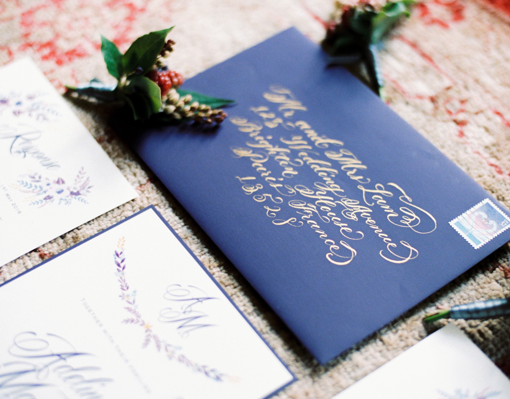

Каллигра́фия (от греч. καλλιγραφία — «красивое письмо») — одна из отраслей изобразительного искусства. Ещё каллиграфию часто называют искусством красивого письма. Современное определение каллиграфии звучит следующим образом: «искусство оформления знаков в экспрессивной, гармоничной и искусной манере».
История письменности — это история эволюции эстетических понятий, развивающихся в рамках технических навыков, скорости передачи информации и материальных ограничений человека, времени и пространства. Стиль письма, обычно описываемый как шрифт, рука или алфавит.

Современная каллиграфия довольно разнообразна — от бытовых рукописных надписей на открытках до высокого искусства, в котором экспрессия написанного рукой знака не всегда рождает чёткие буквенные формы. Классическая каллиграфия значительно отличается от шрифтовых работ и нестандартных рукописных форм, хотя каллиграф должен уметь делать и то, и другое; буквы сложились в такие формы исторически, но при этом они текучи и спонтанны и всегда рождаются в момент письма.
Сейчас каллиграфия существует в основном в форме пригласительных открыток и свадебных поздравлений, а также в граффити, шрифтах и рукописных логотипах, в религиозном искусстве, графическом дизайне, в высеченных надписях на камнях и в исторических документах. А также каллиграфию используют на телевидении в качестве оформления, в различных характеристиках, свидетельствах о рождении и в других документах, где предполагается писать от руки.
